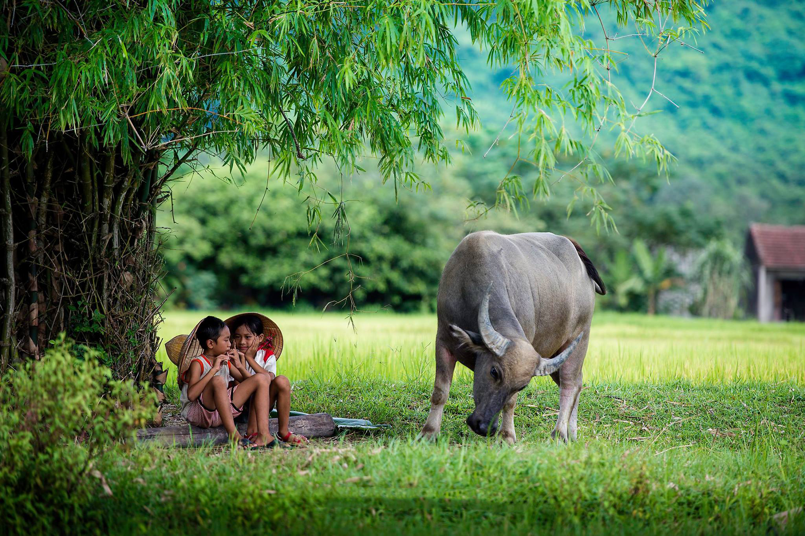

Thái Bình: Mộc Mạc Và Yên Bình
SEP 5, 2021 BY VU HOANG ANH
Dọc theo ven biển thuộc đồng bằng sông Hồng, Thái Bình với một mặt giáp biển và 3 mặt còn lại được bao bọc bởi 3 con sông lớn: sông Hóa, sông Luộc và sông Hồng. Vì vậy, Thái Bình được thiên nhiên ưu đãi những bãi biển đẹp, những cánh đồng thẳng tắp, cây cối tươi tốt, xanh mướt một màu. Không chỉ là cái nôi của hát Chèo, Thái Bình còn tự hào là mảnh đất có phong phú về hệ thống đền, chùa cùng những món ăn mang đậm chất địa phương vô cùng độc đáo. Trải nghiệm về Thái Bình, du khách hẳn sẽ ngỡ ngàng trước cảnh đất và tình người của miền quê, được coi là vựa lúa của đồng bằng sông Hồng này.

Từ Hà Nội, vượt qua chặng đường hơn 100 km, đi ô tô mất khoảng 2 tiếng đồng hồ, là du khách đến với
thành phố Thái Bình. Có lẽ, cũng vì tên gọi Thái Bình mà từ cảnh sắc thiên nhiên đến di tích, danh
thắng ở đây cũng trở nên yên bình và lắng đọng. Đến Thái Bình, du khách sẽ được trải nghiệm khám phá
đời sống của người dân vùng đồng bằng sông Hồng làm nghề nông là chủ yếu để tận hưởng những giây
phút an lành, thư thái của cuộc sống bình dị chốn quê rất thân thuộc và gần gũi. Anh Nguyễn Văn Nam,
một người con của đất Thái Bình chia sẻ: “Bạn về Thái Bình sẽ ít thấy những resort, những xe sang
hay tiệm ăn, khách sạn 4, 5 sao như các trung tâm du lịch lớn. Thay vào đó là cảnh hai bên đường với
đồng lúa xanh mướt, nhà cửa chỉ đủ để ở, những khách sạn bình dân và không khí của vùng quê yên
bình, trầm mặc. Nó khác xa sự ồn ào náo nhiệt ở những thành phố lớn mà bạn thường thấy. Cuộc sống cứ
yên bĩnh giản dị như thế đã làm nên nét riêng của Thái Bình”.
Từ thành phố Thái Bình, đi 10km theo hướng về huyện Đông Hưng, du khách sẽ đến với cụm làng văn hóa
nổi tiếng của Thái Bình cách nhau trong bán kính không quá 5km là làng Khuốc, làng Đông Các và Làng
Nguyễn. Về làng Đống, xã Đông Các, huyện Đông Hưng, du khách sẽ được tận mắt chứng kiến người nông
dân quê lúc điều khiển con rối một cách khéo léo và đầy biểu cảm. Các nghệ nhân làng Đống không chỉ
biết múa mà còn tạc được cả tượng, cả con rối. Mỗi con rối là một tác phẩm điêu khắc dân gian. Đến
làng Đống, du khách sẽ được các nghệ nhân trong làng trực tiếp trình diễn những con rối mang hơi thở
đời sống cùng những khát vọng của người dân qua những chuyển động dưới bàn tay khéo léo của nghệ
nhân cùng giai điệu vui nhộn các làn điệu chèo.
Sang xã Phong Châu, huyện Đông Hưng, du khách được thưởng thức những làn điệu chèo được thể hiện
bằng giọng hát mộc mạc, chân chất của các nghệ nhân làng Khuốc. Ông Bùi Văn Ro, người làng Khuốc,
chia sẻ: “Việt Nam có hai nưoi hát chèo là Ninh Bình Và Thái Bình. Người giữ được tổ nghề là người
Thái Bình cho nên vẫn giữ được 28 làn điệu chèo độc đáo chưa được phổ biến và chỉ người làng chèo
Khuốc mới hát được làn điệu đó. Nghề này ở địa phương không phải là nghề kiếm sống mà tổ tiên giao
cho mình rồi thì mình phải có trách nhiệm với nghề nghiệp”.
Đến Thái Bình, du khách được tận hưởng những phút giây yên bình bên bãi biển cát phẳng mịn chạy dài.
Trước đây, du lịch biển Thái Bình mới chỉ khai thác bãi biển Đồng Châu, huyện Tiền Hải, nhưng nay
Thái Bình đã có thêm 2 bãi biển mới, đẹp và hấp dẫn. Đó là Khu du lịch sinh thái biển Cồn Vành và
khu du lịch sinh thái biển Cồn Đen, cách trung tâm thành phố Thái Bình khoảng 40 km. Anh Vũ Đăng
Thiên Lý, người con đất Thái Bình và là một hướng dẫn viên ở khu du lịch Cồn Đen, cho biết: “Về với
Thái Bình, các bạn sẽ về với những tiếng sáo diều vi vút trên những cánh đồng lúa xa, những cánh cò
bay và về với những hơi thở cảu mùa màng, về với những nhịp sống dân dã nhất của đồng quê Bắc Bộ.
Như ở biển Cồn Đen, nước không xanh nhất, đẹp nhất nhưng lại là nơi lãng mạn. bởi về nơi đây du
khách sẽ không bị ai làm phiền và thú vị nhất là khung cảnh đứng trước biển ngắm bình minh”.
Thái Bình là một tỉnh đồng bằng, mang vẻ đẹp chất phác, đôn hậu như chính con người quê lúa. Chính
cái bình dị, yên lành, chân chất đó lại là một nét độc đáo và duyên dáng của quê hương hát Chèo.